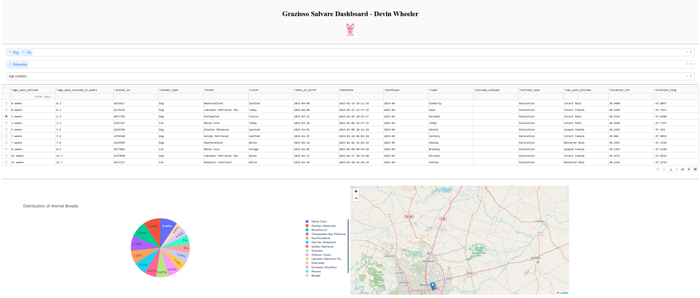

Artifact Overview
This artifact is a dashboard to display data built with Dash, MongoDB, and Plotly. It was originally made for CS 340: Database Design and Maintenance. The purpose of this dashboard it to allow users to view and filter an animal shelter database. The original version connected to a MongoDB database and supported basic displays. For this enhancement, I improved the user interface, filtering capabilities, and cleaned up the layout.
Enhanced Code: View on GitHub
Original Code: View on GitHub
Narrative: View on GitHub
Justification
- Modernized layout using Dash components.
- Added multiple layers of filtering using dropdowns and radio buttons.
- Enabled dynamic sorting by user-selected fields.
- Fixed map logic to reflect selected data properly.
- Updated pie chart to show all breeds.
- Implemented conditional UI rendering to improve UX.
Program Outcomes Demonstrated
- Professional Communication: Made a user-friendly dashboard using tools like Dash and Plotly
- Technical Implementation: Demonstrated full-stack development by integrating MongoDB with a well made and user friendly Dash frontend, while incorporating advanced filtering and sorting features.
- Collaborative Environments: Created a tool to help decision making, that could be easily adapted by different teams or stakeholders to show animal shelter data effectively.
- Security Mindset: Improved data secruity by using environment variables for credentials and efficient MongoDB queries to prevent unneeded data exposure.
Reflection
This enhancement helped me better understand how frontend design can be impacted by backend data handling, and the other way around. One challenge with this was making sure the filters and visualizations stayed consistent. Another challenge was making sure the proper data was pulled for the database. Because you could pull the data then filter it but that is a waste of resources when you could pull just the needed data first. I also learned better practices for MongoDB querying and Pandas based data frames. Overall this enhancement helped me to bridge my database knowledge with frontend dashboard UI.